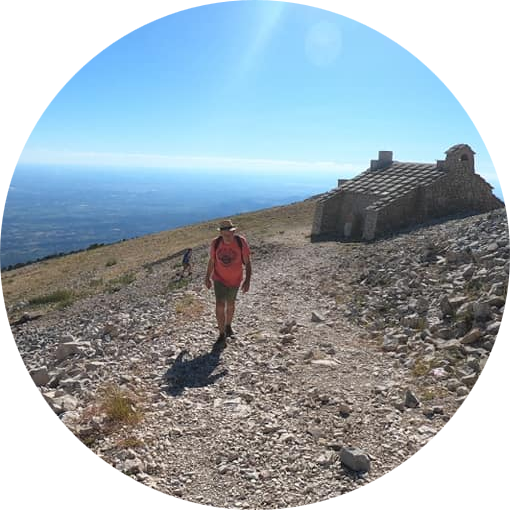

|  |
Etienne TielemansGepensionneerde informaticus. Deze mens is een 68jarige gepensionneerde, die zich teruggetrokken heeft in het zuiden van Frankrijk in het mooie dorpje Saint Saturnin Les Apt in het departement Vaucluse. Voorheen was hij informaticus-actuaris bij Curalia, een verzekeringsmaatschappij voor Belgische apothekers. Tevens was hij bassist bij de in de regio Lennik succesvolle coverband Zedder, waar hij nu vervangen is door de voorzitter van de NVA van Liedekerke. |
| Datum | Band |
|---|---|
| eighties | The Rabbits |
| end of the eighties | PRA |
| nineties | Stress Bien |
| 2000 and further | Zedder |
|
|